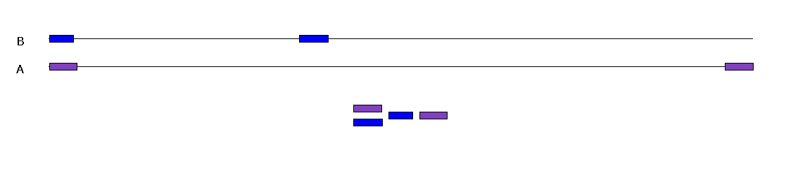

 (test data, 3' -> 5')
index % time self children called name
<spontaneous>
[1] 97.6 0.00 3.27 main [1]
[2] 96.9 0.00 3.24 1 Genome::read(std::string&) [2]
[3] 96.9 0.01 3.23 1 Genome::read(std::basic_ifs...
[4] 84.2 0.08 2.74 199914 Genome::parseDataLine(std::...
-----------------------------------------------
0.00 0.00 253/200167 Genome::parseHeaderLine...
0.05 1.66 199914/200167 Genome::parseDataLine(s...
[5] 51.1 0.05 1.66 200167 strsplit(std::string, std::...
0.06 1.04 3579101/3579185 std::vector<std::string...
0.00 0.24 200167/200167 std::vector<std::string...
0.03 0.09 200167/200167 std::unique_ptr<std::ve...
0.04 0.07 3779268/3779268 bool std::operator!=<ch...
0.03 0.04 3579101/3579101 std::unique_ptr<std::ve...
0.00 0.03 200167/200167 std::unique_ptr<std::ve...
0.00 0.00 200167/200167 std::unique_ptr<std::ve...
0.00 0.00 200167/200168 std::vector<std::string...
Thank you
vector<string> strsplit ( string& input, string& delim, bool keepEmpty ) { string token, theStr(input); int L = delim.length(); vector<string> result(new vector<string>()); while (token != theStr) { auto end = theStr.find_first_of(delim); token = theStr.substr(0, end); theStr = theStr.substr(end + L); if (keepEmpty || token.length() > 0) { result.push_back(token); } } return result; }